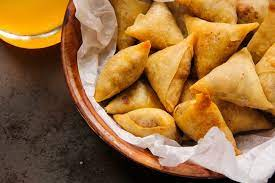

35 Minutes Sambusa

Sambusa are a dough pocket, filled
with a ground meat mixture and
fried. Don't let these small
pastries fool you, they are
packed with flavor and so, so,
good!
Ingrients
dough
- 3 cups All-Purpose Flour
- 1⅔ cups Luke-warm Water
- 2 tbsp. Olive Oil
Pastry "Glue"
- 3 tbsp. All-Purpose Flour
- 1½ tbsp. Water
Filling
- 1 lb. Ground Beef
- 1 Large Onion chopped thin
- 5 cloves Garlic minced
- 1 tsp. Salt
- ½ tsp. Cumin
- ¼ tsp. Black Pepper
- ¼ tsp. Ground Cardamom
- ¼ tsp. Ground Ginger
- ¼ tsp. Ground Turmeric
- ¼ tsp. Ground Cloves
- ¼ tsp. Ground Cinnamon
- ⅓ cup Fresh Cilantro chopped finely
- Vegetable Oil for fryin
Instructions
Dough*
- Add the flour to a large mixing bowl
and slowly add in the water and oil,
kneading as you go. Do this until all
of the liquids have been added. If too
dry, add a small amount more water.
If too moist, add more flour.
- Form the dough into a ball
and knead on a flour-dusted
surface for an additional
10 minutes.
- Place the ball of dough back
into the bowl and cover. Set
aside while you make the pastry
"glue" and meat filling.
Pastry "Glue"
- Add the flour and water to a
small bowl and whisk until a
glue-like texture forms. Set
aside.
Meat filling
- Place ground beef, onion and
garlic in a skillet and cook
over medium heat until no pink
remains. Drain of any liquids
and then put the mixture in a
medium mixing bowl.
- Add the remainder of the filling
ingredients and combine well.
Putting it all together
- Divide the dough into 6 balls. Rolls each ball out into a thin circle. Slice that circle in half, directly down the middle.
- Pick up one of the halve and hold it, flat side down. Take the right edge and fold it about ¾ of the way over towards the left. Now take the left side and do the same towards the right. This should create a pocket.
- Spread a little of the pastry "glue" with your finger where the two sides overlap to bind them.
- Place about 1 ½ tbsp. of the meat mixture into the pocket and press the final flap of dough down over the opening. Use some more of the pastry "glue" to bind. Continue this process until all of the dough is gone and you have 12 sambusa.
- Heat the vegetable oil over medium until it is well-heated.***
- Cook, 2-4 at a time. For me it took about 2 minutes on each side to achieve a golden-brown color.
- Remove from the heat and cool on a paper towel covered plate. Let cool and enjoy!!!